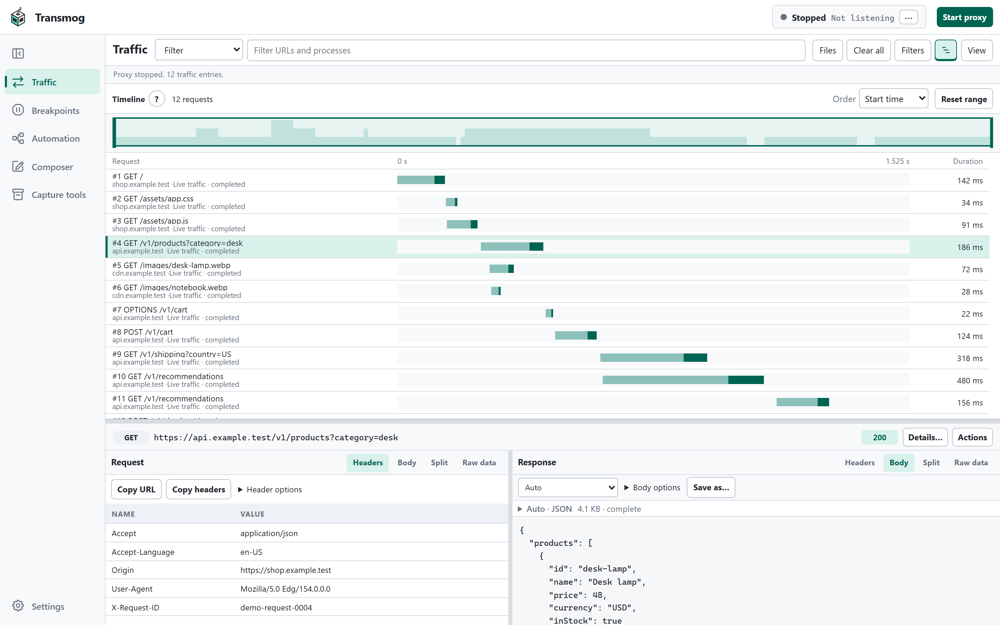
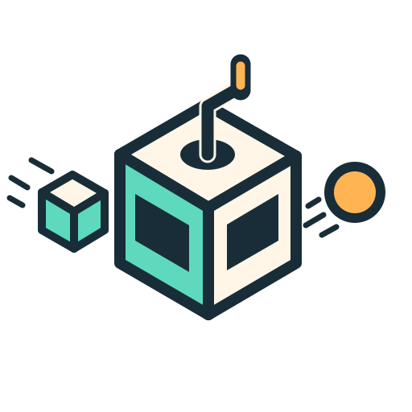
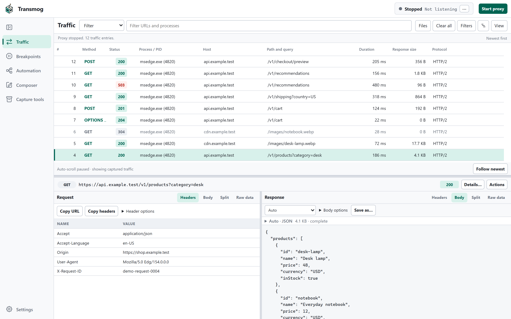
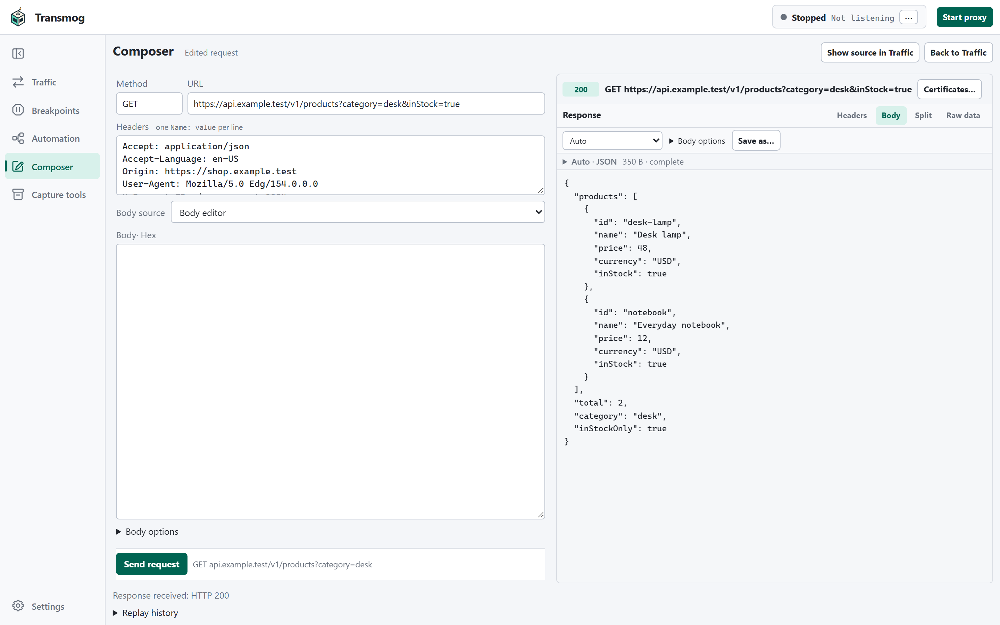

01 / TIMING
See where the time goes.
Follow requests across a timeline. Spot slow responses, overlaps, and retries.



Transmog.THE WEB, UNDER THE HOOD
A web debugging proxy that puts your app’s traffic in your hands. Inspect requests, find the surprises, and try a different response.
Download Windows previewFree & open source Windows x64 & ARM64

FOLLOW THE CLUES
Keep the request, the response, and the bigger picture together.
Follow requests across a timeline. Spot slow responses, overlaps, and retries.

Take a captured request into Composer, change the details, and inspect the result.

Make the next response your own. Pause exchanges with breakpoints, rewrite headers, or serve a saved response.
YOURS TO EXPLORE
Free to use. Open to change. MIT licensed.